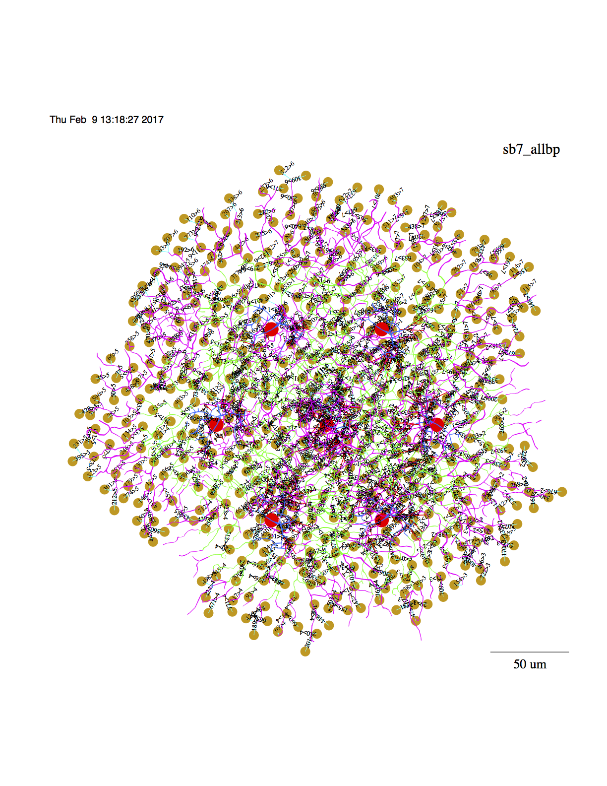
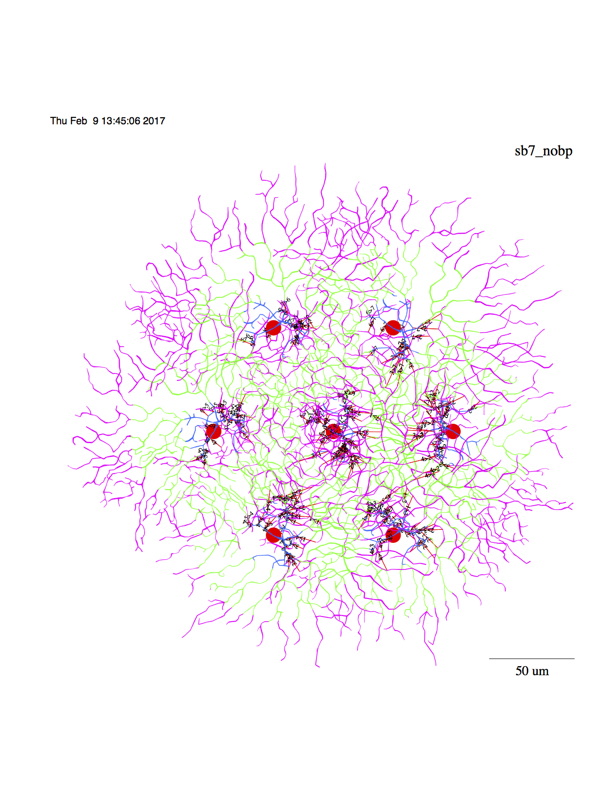

The models for the paper
Ding H, Smith RG, Poleg-Polsky A, Diamond JS, Briggman KL (2016)
Species-specific wiring for direction selectivity in the mammalian
retina. Nature 535:105-10
are available for downloading through the authors link (appears in
above paper):
ftp://retina.anatomy.upenn.edu/pub/rob/nc.tgz
Note that NeuronC has extensive high quality documentation available
from links on the below:
http://retina.anatomy.upenn.edu/~rob/neuronc.html
has been under development since 1991, and is actively supported by
Rob Smith who provides these additional instructions for running the
models from Ding et al 2016:
Here is a list of commands that show how to run retsim for the
sbac_stim model. There is a simple example in the retsim manual, but
that is not specific to the sbac_stim model. I've included (point 3
below) command lines to display the model as well as run it (point 4).
1. Download nc.tgz, compile nc.
a. tar xvzf nc.tgz;
b. (For Mac, edit nc/src/makefile, if not Mac skip this)
cd nc/src;
for Mac, edit makefile
Comment out line 2:
CFLAGS = -O3
Uncomment line 3:
# CFLAGS = # for Mac OSX
c. cd .. (i.e. cd ~/nc)
make clean (to remove any previous binaries)
make
-------------------------------------------------------
2. Compile retsim
a. cd models/retsim (i.e. cd ~/nc/models/retsim)
b. for Mac, edit makefile (i.e. ~/nc/models/retsim/makefile)
Comment out 1st line:
CFLAGS = -Ofast
Uncomment 2 lines:
l 6: # CFLAGS = # for Mac OSX
l 47: # OSFLAGS = -DMACOSX
c.
make clean (to remove any previous binaries)
make
2.5 (extra assignments)
export PATH=$PATH:/where_ever_nc_is/nc/models/retsim:/where_ever_nc_is/nc/bin
export LD_LIBRARY_PATH=$LD_LIBRARY_PATH:/where_ever_nc_is/nc/models/retsim
-----------------------------------------------
3. Test of retsim. Run 2 console windows (Konsole in KDE, terminal in Mac).
In first window, "cd nc/models/sbac_stim".
In second window, "cd nc/models/retsim".
a. Click on first window. Then view "rsbac_stim" (use "more rsbac_stim" or
"less rsbac_stim"), and highlight, copy, and paste the first line into second
console window:
The first command line (un-wordwrap the below and similarly in other examples)):
retsim --expt surf_area --celltype sbac --sbac_file morph_sbac3c
--sbac_densfile dens_sbaca.n --nvalfile nval_dsgc_sbac2.n --sb_vr -0.06
--sb_vs -0.06 --sb_rm 1e4 --sbaclm 0.1 --dri 200 --dcm 1e-6 --dendp_dia_factor
1.5 --nadist 10e-3 --namid 8e-3 --DENDD 0 --DEND 1 --DENDP 2 --SOMA 3
--HILLOCK 4 --HCK 4 --sbac_synanp 0 --sbac_synrng 0 --sbac_isynrngi 0
--sbac_isynanpi 0 --sbac_isynanpo 0 --kdist 0 --kmid 1e-3 --kprox 1e-3 --ksoma
3e-3 --cadist 0 --camid 0 --sb_rid 0 --sb_rii 0 --sb_rip 0
This produces:
# Retina simulation
#
# retsim version: 1.7.88
# nc version: 6.2.69
# date: Wed Feb 8 14:27:26 EST 2017
# machine: Roberts-Mac-mini
# experiment: surf_area
# confdir: runconf
# nvalfile: nval_dsgc_sbac2.n
# sbac morph: morph_sbac3c, densities: dens_sbaca.n
# chanparams file: chanparams
#
#c 3676 neural elements (31.4 MB) converted to compartments.
#c 3676 neural elements saved.
#c Total memory space used 33 MB.
#c 357 comps, 3649 nodes, 356 connections, 498 channels.
#
# Surface area and conductances of sbac
#
# nval file nval_dsgc_sbac2.n
# density file dens_sbaca.n
#
# Region R1 R2 R3 R4 Tot
# Label DendD Dend DendP Soma Cell
# color blue green brown red
#
# Area 7285 3182 764.4 192.6 1.142e+04 um2
# CompLam 0.1 0.1 0.1 0.1 Lambda/comp
#
# Rm 1e+04 1e+04 1e+04 1e+04 1e+04 Ohm-cm2
# Ri 200 200 200 200 Ohm-cm
# Cm 1 1 1 1 uF/cm2
#
# Rin 137 314 1.31e+03 5.19e+03 87.54 MOhm (from Rm only)
# Cond 7285 3182 764.4 192.6 1.142e+04 pS (from Rm only)
# Cm 72.85 31.82 7.644 1.926 114.2 pF
# Cond/cap 100 100 100 100 100 pS/pF
#
# NA8 10 8 0 0 8.605 mS/cm2
# K6 0 1 1 3 0.3961 mS/cm2
#
# NA8 728.5 254.6 0 0 983.1 nS
# K6 0 31.82 7.644 5.778 45.25 nS
b.
3. To display the model,
a.
cd nc/models/retsim
less rsbac_stim
Run line 291:
#
# display 7 cell model with bps:
#
retsim --expt sbac_stim --sbac_file morph_sbac_168 --sbac_densfile
dens_sbacc.n --sbac_densfile2 dens_sbacd.n --sb_rm 1e4 --sbarr 107 --sbspac 70
--sb_vs -0.049 --sb_vr -0.060 --radincr 10 --soma_z -50 --sbac_thetax 4
--sbac_thetay 4 --predur 0.15 --vhold -0.06 --minten -0.040 --scontrast 0.003
--outward 0 --iscal 2e-9 --dri 100 --ninfo 2 --set_vclamp 0 --sdia 0.5
--dSomaDia 10 --sbac_dend1 1 --sbac_dend_cplam 0.1 --stimtype 1 --barwidth 30
--barlength 500 --velocity 2000 --stimdur 0.5 --nadist 0e-3 --namid 0e-3
--kdist 2e-3 --kmid 2e-3 --kprox 2e-3 --ksoma 3e-3 --cadist 2.5e-3 --camid
0e-3 --plotlabel sb7_allbp -r 12345 --n_hpb1 0 --dbp1_cond 15e-10
--dbp1_nscale -2.1 --sbac_nscale -3.05 --sbaclm 0.1 --no_excit 1 --no_inhib 0
--sbac_isynanpo 30 --sbac_isynrngi -1180 --sbac_isynanni 55 --dbp1_anpi 0
--dbp1_anpo 200 --sbac_ithr -0.054 --stim_theta 0 --mxrot 0 --make_movie 0
--space_time 1 --frame_int 0.0002 --Vmin -0.06 --Vmax -0.045 -d 1 -v | vid -c
sbac7_allbps.ps
One way you can run this is to make line 291 a file and source it:
head -291 ../sbac_stim/rsbac_stim | tail -1 > line291.sh
source line291.sh
You can then look at the output file, sbac7_allbps.ps. Convert it to a .pdf
file with:
ps2pdf sbac7_allbps.ps
or use preview on the mac which can export to different formats:

b. Or, display directly onto a vid window:
#
# display 7 cell model with bps:
#
retsim --expt sbac_stim --sbac_file morph_sbac_168 --sbac_densfile
dens_sbacc.n --sbac_densfile2 dens_sbacd.n --sb_rm 1e4 --sbarr 107 --sbspac 70
--sb_vs -0.049 --sb_vr -0.060 --radincr 10 --soma_z -50 --sbac_thetax 4
--sbac_thetay 4 --predur 0.15 --vhold -0.06 --minten -0.040 --scontrast 0.003
--outward 0 --iscal 2e-9 --dri 100 --ninfo 2 --set_vclamp 0 --sdia 0.5
--dSomaDia 10 --sbac_dend1 1 --sbac_dend_cplam 0.1 --stimtype 1 --barwidth 30
--barlength 500 --velocity 2000 --stimdur 0.5 --nadist 0e-3 --namid 0e-3
--kdist 2e-3 --kmid 2e-3 --kprox 2e-3 --ksoma 3e-3 --cadist 2.5e-3 --camid
0e-3 --plotlabel sb7_allbp -r 12345 --n_hpb1 0 --dbp1_cond 15e-10
--dbp1_nscale -2.1 --sbac_nscale -3.05 --sbaclm 0.1 --no_excit 1 --no_inhib 0
--sbac_isynanpo 30 --sbac_isynrngi -1180 --sbac_isynanni 55 --dbp1_anpi 0
--dbp1_anpo 200 --sbac_ithr -0.054 --stim_theta 0 --mxrot 0 --make_movie 0
--space_time 1 --frame_int 0.0002 --Vmin -0.06 --Vmax -0.045 -d 1 -v | vid
c. Or, display the model without bipolar cells
# display 7 cell model without bps:
#
retsim --expt sbac_stim --sbac_file morph_sbac_168 --sbac_densfile
dens_sbacc.n --sbac_densfile2 dens_sbacd.n --sb_rm 1e4 --sbarr 107 --sbspac 70
--sb_vs -0.049 --sb_vr -0.060 --radincr 10 --soma_z -50 --sbac_thetax 4
--sbac_thetay 4 --predur 0.15 --vhold -0.06 --minten -0.040 --scontrast 0.003
--outward 0 --iscal 2e-9 --dri 100 --ninfo 2 --set_vclamp 0 --sdia 0.5
--dSomaDia 10 --sbac_dend1 1 --sbac_dend_cplam 0.1 --stimtype 1 --barwidth 30
--barlength 500 --velocity 2000 --stimdur 0.5 --nadist 0e-3 --namid 0e-3
--kdist 2e-3 --kmid 2e-3 --kprox 2e-3 --ksoma 3e-3 --cadist 2.5e-3 --camid
0e-3 --plotlabel sb7_nobp -r 12345 --n_hpb1 0 --dbp1_cond 15e-10 --dbp1_nscale
-2.1 --sbac_nscale -3.05 --sbaclm 0.1 --no_excit 1 --no_inhib 0
--sbac_isynanpo 30 --sbac_isynrngi -1180 --sbac_isynanni 55 --dbp1_anpi 0
--dbp1_anpo 200 --sbac_ithr -0.054 --stim_theta 0 --mxrot 0 --make_movie 0
--space_time 1 --frame_int 0.0002 --Vmin -0.06 --Vmax -0.045 --n_dbp1 0 -d 1
-v | vid -c > sbac7_nobps.ps &
you can conveniently run the above with
head -303 ../sbac_stim/rsbac_stim | tail -1 > line303.sh
# remove the &(s) from line303.sh then type:
source line303.sh
and then view the output file: sbac_nobps.ps:

--------------------------------------------------
4. To run other command lines in rsbac_stim it is easier to copy all the
commands in the nc/models/sbac_stim folder to the nc/models/retsim folder. The
reason for this is that retsim runs from nc/models/retsim. The last 2/3 of
rsbac_stim has higher level command lines that run other scripts in the
nc/models/sbac_stim folder. Run them in a similar way (copy and paste) in the
nc/models/retsim folder.
a. As described above, run 2 console windows (Konsole in KDE, terminal in Mac)
-- use the same ones if you haven't exited them.
In first window, Copy the files from nc/models/sbac_stim to nc/models/retsim:
cd nc/models/sbac_stim
cp * ../retsim
cd ../retsim
In second window, "cd nc/models/retsim".
b. In first window, "less rsbac_stim" (to quit from "less", press "q").
c. In second window, run commands from first window: copy a script name from
the "less" display, then paste it to the second window.
d. For, example to run "rsbac_stim_plots_angl" from the second window
(nc/models/retsim), do:
./rsbac_stim_plots_angl
This one has 2 "for" loops, one with 19 contrasts, and the second with 2
contrasts -- it will run 38 models simultaneously. This will likely not run
very fast on a normal mac without a lot of memory.
e. Or, copy a line from rsbac_stim in window 1, and paste it into window 2:
For example, rsbac_stim line 715:
rsbac_stim_plots_vel --relangle 300 --sdia 0.22 --synanpo 90
This will run a series of models that can be analyzed with (line 725):
printdsi_vel_files --sdia 0.22
printdsivc_vel_files --sdia 0.22
---------------------------------------------
5. Some of the command lines in rsbac_stim call the "plotmod" and/or
"vid" commands. These are described in the "nc" manual. The "vid" command is
the graphics output window for nc and retsim. The "plotmod" command takes the
text file output from "nc" or "retsim" and can plot it on a "vid" window, or
can select specific plot traces. These commands are compiled automatically
along with "nc" and placed in the nc/bin folder. But to run, they need to be
in your shell path.
One easy way to get vid and plotmod into your path is to set your shell path
to include the ~/nc/bin folder. See the "retsim" manual for more background on
this. (Another way is to simply copy the contents of ~/nc/bin to
/usr/local/bin.) Setting the path is usually preferable, since that obviates
copying any commands into a system folder. You can set the path by creating a
.bash_profile or .bashrc file in your home folder that contains the line:
e.g.:
PATH=/where_ever_nc_is/nc/bin:$PATH
This will then allow plotmod and vid to run from any folder including
nc/models/retsim.
--
Robert G. Smith
Research Associate Professor
Department of Neuroscience
University of Pennsylvania